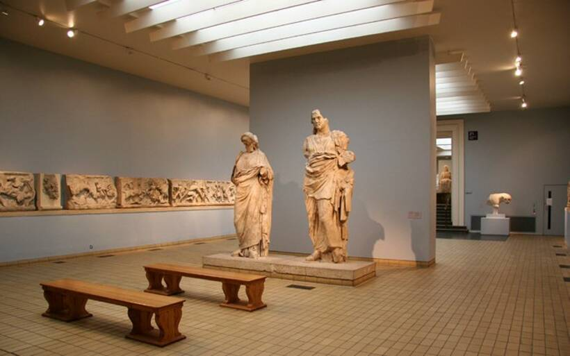
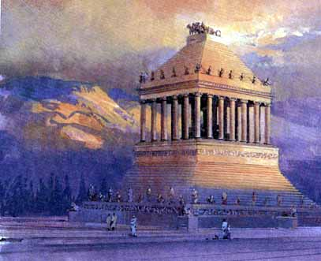

Le mausolée d’Halicarnasse était un tombeau monumental situé au sud-ouest de la Turquie dans la ville d’Halicarnasse (actuellement Bodrum). Le tombeau abritait les dépouilles de Mausole, roi de Carie entre 370 av. J.-C. et 353 av. J.-C. et satrape_1 Perse. Du fait de l’aspect impressionnant de cette construction, le terme « Mausolée » désigna par la suite tout tombeau de grande dimension.
Il est très probable qu'Artémise II, soeur et femme de Mausole entreprit la construction de cet édifice à la mort du roi, en 353 av. J.-C., pour lui rendre hommage. Le mausolée fut terminé une année après la mort d'Artémise, en 350 av. J.-C.
D'une hauteur totale de près de 45 m, le mausolée d'Halicarnasse était soutenu par trente-six colonnes et surmonté d'une pyramide ornée d'un quadrige_2 de marbre. La chambre funéraire contenait sans doute les tombes de Mausole et d'Artémise. On pouvait aussi observer une frise d'une grande valeur qui représentait un combat des Grecs contre les Amazones et les Centaures.
Ce monument fut détruit en partie, par un séisme, vers le XIVe siècle. Peu de temps après, les chevaliers de l'ordre de Malte décidèrent de construire une forteresse non loin de là. Ils utilisèrent les pierres du mausolée et en 1522, il n'en resta plus aucune. De nos jours, nous pouvons encore observer cette forteresse à Bodrum.
Si certains éléments de décoration découverts lors des fouilles réalisées au XIXe siècle sont aujourd'hui exposés sur le site, les éléments les plus spectaculaires et les mieux conservés sont conservés au British Museum. C'est donc à Londres qu'il est nécessaire de se rendre pour admirer les statues colossales de Mausole et Artémise, des reliefs sculptés en marbre ainsi que des fragments de l'énorme char à quatre chevaux en marbre qui couronnait le mausolée.
Les décorations et les sculptures étaient d'une grande beauté. Certaines pièces ont été retrouvées et peuvent être vues au British Museum de Londres.
Le mausolée d'Halicarnasse fut classé ainsi car il se démarque par sa beauté et sa richesse. En effet, les ornements du sanctuaire ont été réalisés par les artistes les plus connus de son temps :
Il est probable que la construction de ce monument funéraire haut de 45 mètres, et entouré d'une cour close de 242,5 mètres par 105, ait commencé avant même la mort du roi Mausole. Le chantier se serait poursuivi ensuite sous la direction de sa veuve Artémise. Pythis serait le principal architecte du mausolée d'Halicarnasse et également sculpteur du somptueux quadrige qui ornait le sommet du monument. Parmi les autres sculpteurs ayant oeuvré à la réalisation du riche ensemble décoratif du mausolée, l'architecte romain Vitruve évoque notamment Praxitèle, l'un des sculpteurs les plus connus de la Grèce Antique, mais aussi Scopas, Bryaxis et Léocharès.
1_satrape : gouverneur des anciennes provinces perses
2_quadrige : char à deux roues attelé de quatre chevaux côte à côte